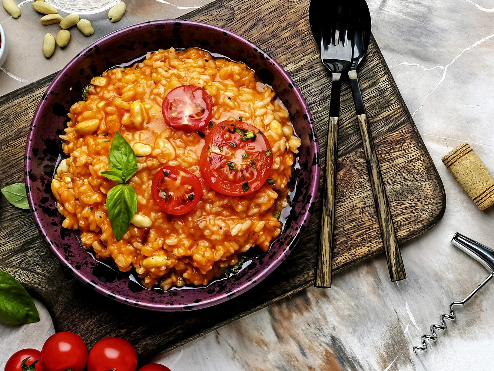

Zutaten:
- 200 g
- 1
- 1 Zehen
- 70 g
- 2 El
- 4
- 450 ml
- Risottoreis
- Zwiebeln
- Knoblauch
- Butter
- Tomatenmark
- Tomaten
- Gemüsebrühe
- Salz
- Pfeffer
- Basilikum
- Parmesan
Kochmodus:
Zubereitung:
- 1 Zwiebeln und 1 Knoblauchzehen schälen und schneiden
- 70 g Butter in einem Topf erhitzen und die Zwiebeln und den Knoblauch darin glasig dünsten
- 200 g Risottoreis und 2 El Tomatenmark hinzufügen und kurz mit dünsten
- Nach und nach 450 ml Gemüsebrühe dazugeben und gelegentlich umrühren.
- 4 Tomaten schneiden und kurz im fertigen Risotto erhitzen
- Mit Salz und Pfeffer abschmecken und mit Basilikum und Parmesan bestreuen.